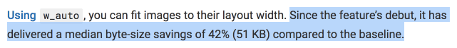

<!-- Load a WebP if we can (but fall back if we can't). -->
<picture>
<source srcset="whats-up.webp" type="image/webp">
<img src="whats-up.jpg" alt="I'm an image!">
</picture>
<!-- Ah, much simpler! -->
<img src="/images/image.jpg" alt="I'm an image!">
Wouldn't it be nice?
DPR
Device Pixel Ratio.
DPR: 2
<img src="whats-up-1x.png"
srcset="whats-up-1x.png 1x, whats-up-2x.png 2x"
alt="I'm an image!">
<?php
// This is just an example, maybe find a different
// fallback (serve `srcset` markup or use a cookie).
$dpr = 2;
if (isset($_SERVER["HTTP_DPR"])) {
$dpr = (int)$_SERVER["HTTP_DPR"];
}
?>
<img src="image-<?php echo($dpr); ?>x.jpg" alt="I'm an image!">
The intrinsic size, but divided by DPR to correct for pixel density.
Extrinsic size
The size of the image in the layout as affected by CSS
(or width and height attributes)
Width
does all the math for you!

Viewport-Width
The width of the viewport in CSS pixels.
Viewport-Width: 320
Uses for Viewport-Width:
Art direction (use in concert with Width).
Image or video omission.
Functionality omission (e.g., JavaScript).
<?php
// A sensible default in the absence of `Viewport-Width`
// _could_ be to set a high value and deliver all
// functionality (or maybe set a cookie).
$viewportWidth = 1280;
if (isset($_SERVER["HTTP_VIEWPORT_WIDTH"])) {
$viewportWidth = (int)$_SERVER["HTTP_VIEWPORT_WIDTH"];
}
?>
<body>
<div class="big-hero-banner parallax"></div>
<!-- ... -->
<!-- This is a critical script for all devices -->
<script src="/js/main.js"></script>
<?php
if ($viewportWidth >= 800) {
// Only load this script for large screens that need it.
?><script src="/js/parallax.js"></script><?php
}
?>
</body>
<body>
<!-- This image is used on all devices. -->
<img src="img/hero.jpg">
<!-- This one is only used on large screens. -->
<?php
if ($viewportWidth >= 640) {
?><img src="img/aside.jpg" alt="I'm an image!"><?php
}
?>
</body>
Service Worker!
self.addEventListener("fetch", event => {
// Access hints via `event.request.headers.get`
let dpr = event.request.headers.get("DPR");
let viewportWidth = event.request.headers.get("Viewport-Width");
let width = event.request.headers.get("Width");
event.respondWith(async function() {
// Do what you will with these hints!
}());
});
- Opting in
- Device Hints
- Network hints
- Parting Notes
Networks are
fragile!
Save-Data
"Help me use less data!"
Save-Data: on
Sent when Data Saver in Chrome for Android is turned on.
RTT
Round Trip Time
(in ms)
RTT: 150
Nearest multiple of 25 ms
Downlink
Downstream speed
(in Mbps)
Downlink: 1.75
Nearest multiple of 25 Kbps
ECT
Effective Connection Type
ECT: 3g
Enumerated value
ECT value
RTT (ms)
Downlink (Kbps)
slow-2g
>= 2,000
<= 50
2g
>= 1,400
<= 70
3g
>= 270
<= 700
4g
>= 0
∞
These hints should be used together!
<?php
function network_quality() {
$quality = 1.0;
// If the Save-Data hint is present, assume
// the user wants the lightest experience possible.
if (isset($_SERVER["HTTP_SAVE_DATA"]) &&
$_SERVER["HTTP_SAVE_DATA"] === "on") {
$quality = 0.0;
return $quality;
}
// Additional network quality logic omitted...
return $quality;
}
?>
ECT
Quality Degradation
4g
0.0
3g
0.2
2g
0.4
slow-2g
0.6
RTT
Quality Degradation
> 835
0.1
> 1700
0.1
> 2400
0.1
Downlink
Quality Degradation
< 0.385
0.05
< 0.06
0.05
< 0.033
0.05
<?php
// Could return 0.65 on a less than optimal
// (but not _totally_ crappy) network connection
network_quality();
?>
Yeah, but...
What can we do with this?
Serve lower-density images for slower connections.
Serve still images in lieu of video.
Omit unnecessary resources (e.g., JavaScript).
Omit requests for optional resources on cross origins.
<head>
<title>Sconnie Timber</title>
<meta charset="utf-8">
<?php
// Only show fonts if the network is fast enough
if (network_quality() > 0.5) {
?>
<link rel="stylesheet"
href="https://fonts.googleapis.com/css?family=Lato:400"
type="text/css">
<?php
}
?>
<link rel="stylesheet" href="css/main.css" type="text/css">
</head>
self.addEventListener("fetch", event => {
// Let's see about that netinfo API first...
if ("connection" in navigator) {
var saveData = navigator.connection.saveData;
var ect = navigator.connection.effectiveType;
var rtt = navigator.connection.rtt;
var downlink = navigator.connection.downlink;
var downlinkMax = navigator.connection.downlinkMax;
}
event.respondWith(async function() {
// Do what you will with these hints!
}());
});
When sites
don't adapt
When sites
adapt
Requests
KiB
Load (s)
Client Hints?
3G
22
740
21.00
No
3G
22
414
15.53
Yes
2G
22
740
91.26
No
2G
5
12
5.17
Yes
*Tests performed on throttled connections.
- Opting in
- Device Hints
- Network hints
- Parting Notes
Vary
It's Vary important!
Vary
Keys cache entries!
Modifying a response with Save-Data:
<?php
if (isset($_SERVER["HTTP_SAVE_DATA"]) === false) {
// Show this image if the user has data saver off.
?><img src="some-image.jpg"><?php
}
?>
Setting Vary:
<FilesMatch "\.(html|php)$">
Header set Vary "Accept-Encoding, Save-Data"
</FilesMatch> ^^^^^^^^^